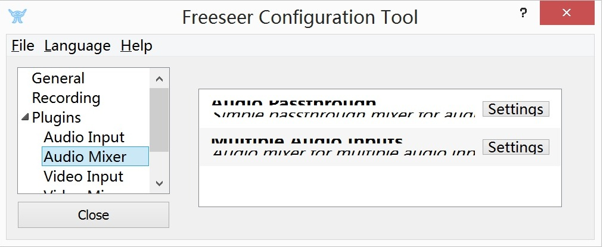

Works done in this week
Install freeseer under Ubuntu
Since it is recommanded to install freeseer under Linux, I first tried to use Ubuntu. It was not difficult to get all the tools and environments setup under linux. However, I met some problem after finishing all the installations: I cannot successfully execute "freeseer-record". I tried a lot of times over again but still cannot solve the problem, so I post the problem to Google Group. Finally, I found the reason. It was caused by a python distribution (Anaconda) that I have installed. After removed the directory from .bashrc and reinstalled the environment again, I got everything work correctly.
Try freeseer under Ubuntu
My Ubuntu is installed in a virtual machine. As I result, I found freeseer cannot run correctly in the system. There was nothing wrong during the program is running, but the output files were broken. The ogg output contains only one frame with no sounds. Besides, if the program keeps capturing too long, it will crash. Since there are on others reporting that problem, I consider it the problem caused by the virtual machine. So I decided to setup the environment again under the main system in my computer, Windows.
Install freeseer under Windows8.1
The process under Windows was quite successful compared with that under Linux. Although a module called gst was said to be missing at the first running, I easily found that it was a problem caused by the gstreamer SDK and quickly solved that.
Try freeseer under Windows8.1
The general execution has not problem. However, some of the functions have some bugs according my test.
- The language changing does not work (I found it issue#476)
- With the system display size over 100%, the font display in freeseer-config is borken like the picuture below.
 - There is no problem with the video captured by camera, but about the ones captured from desktop. The video is not fluent. There would be only one frame every 2 or 3 seconds (ogg output). I am not sure whether it is the problem of Windows, or the problem of the high resolution of my computer. I would tried to trace that problem in the future.
- Desktop sounds cannot be recorded(It is not a bug actually, more like a function loss).
Install the IRC client
The IRC client I installed is XChat under Linux. I have tried to link to the freeseer channel and succeeded.
Read Python Style
I read though the Python style guides offer in the freeseer homepage.
Works plan to do
After looking into the issues, I found myself interested in some of them, and some besides them.
- #476. It is the bug of language changing.
- #541. The resize problem. Maybe a easy one to get start.
- The desktop recording problem that I have mentioned. Since I myself is really interested in the desktop recording things, I really hope the problem can be solved so that I can use freeseer for some daily work.
- The desktop sound recording. Same reason as above.
For the next week, I plan to start looking into the code of freeseer, and am excited about the travel to Toronto!